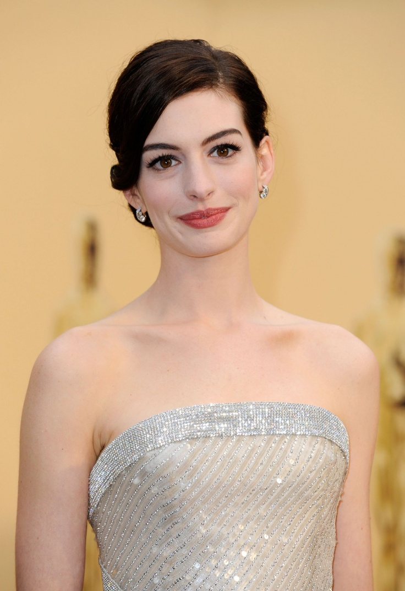

Энн (Э́нни)[4] Жакли́н Хэ́тэуэй (англ. Anne (Annie) Jacqueline Hathaway; род. 12 ноября 1982, Нью-Йорк) — американская актриса и певица. Обладательница премий «Эмми» (2010, за лучшее озвучивание), «Золотой глобус» (2013), Премии Гильдии киноактёров США (2013), BAFTA (2013) и «Оскар» (2013) за лучшую женскую роль второго плана в фильме-мюзикле «Отверженные». Фильмы с её участием заработали 6,8 млрд долларов по всему миру, и она вошла в Forbes Celebrity 100 в 2009 году. Хэтэуэй окончила среднюю школу Миллберн в Нью-Джерси, где выступала в нескольких спектаклях. В подростковом возрасте она снялась в телесериале «Будь собой» (англ. Get Real) (1999—2000) и сделала прорыв, сыграв главную героиню в своем дебютном фильме, комедии Disney «Дневники принцессы» (2001). Хэтэуэй сделала переход на роли взрослых с драмами «Крэйзи» и «Горбатая гора» 2005 года. Комедийный фильм «Дьявол носит Prada» (2006), в котором она сыграла помощника редактора журнала моды, был её самым большим коммерческим успехом на тот момент. Она сыграла выздоравливающую алкоголичку в драме «Рэйчел выходит замуж» (2008), которая получила номинацию на премию «Оскар» за Лучшую женскую роль. Она исполнила роли в коммерчески успешных романтичных фильмах «Война невест» (2009), «День святого Валентина» (2010) и «Любовь и другие лекарства» (2010).
